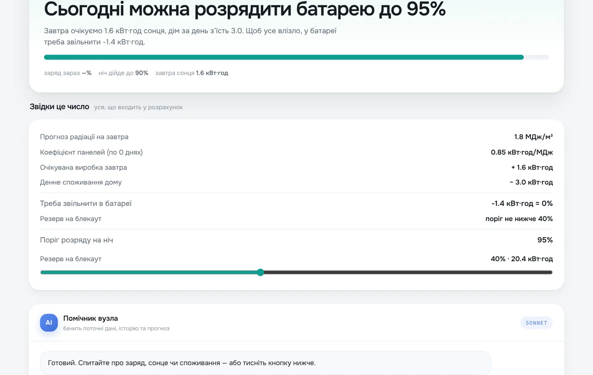
УкраїнаЕнергомоніторинг складсько-виробничого комплексу в Україні
61 точка моніторингу резервуарів і насосних станцій острова Невіс
4 400 датчиків заощадили $250 000 за перший квартал у 62 офісних будівлях
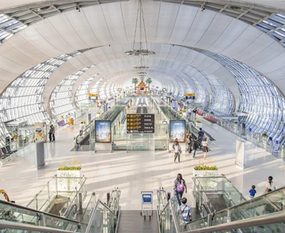
Моніторинг якості повітря в реальному часі в трьох аеропортах Туреччини
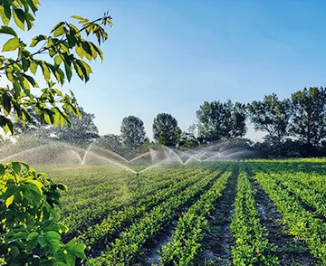
Автоматичний полив на органічній фермі: розгорнуто на 6 об'єктах
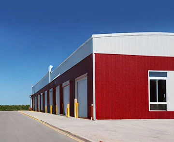
Бездротовий IAQ-моніторинг для LEED на самосховищах StorHub у Сінгапурі
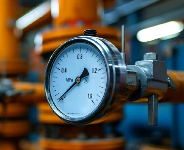
Моніторинг обладнання на 4 заводах: 20 верстатів на LoRaWAN
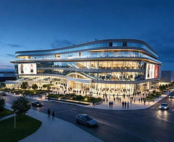
Автоматизація HVAC, води та насосів торгового центру в Асунсьйоні на LoRaWAN®
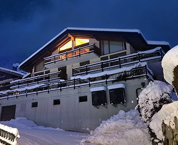
Кімнатне керування опаленням у житловому будинку Pyxis, Швейцарія
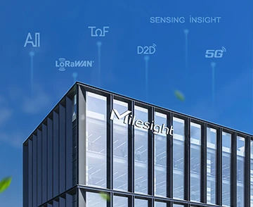
Економія ≈$45 000 на рік у розумному офісі Milesight на 10 400 м²
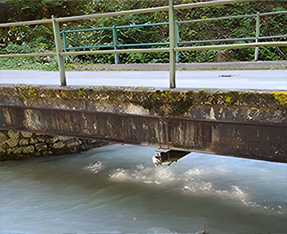
Дистанційний моніторинг рівня води на дамбі Chorinsky-Klause в Австрії

−25% споживання енергії на освітлення в офісній будівлі в Дубаї
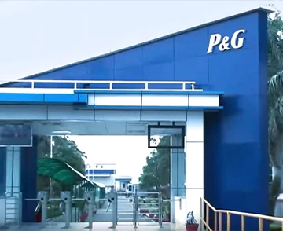
Автоматичний облік води на 26 лічильниках промислового заводу в Індії

80+ 5G CPE UF51 дали стабільний бездротовий зв'язок на електростанції
5G-роутери UR75 на 50 спецавтомобілях: відео в реальному часі до командного центру
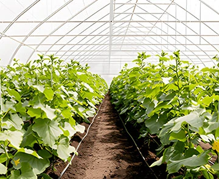
Автоматичне керування шторами й обігрівачами в 100 теплицях США
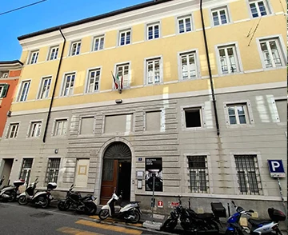
Облік тепла й електроенергії в понад 100 житлових будинках через BACnet over LoRaWAN
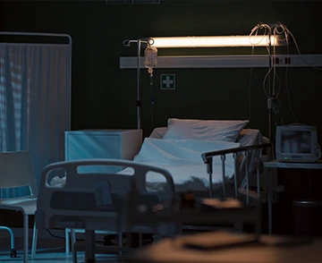
Централізоване керування опаленням у лікарні: 114 термостатів WT101 на Beaver IoT
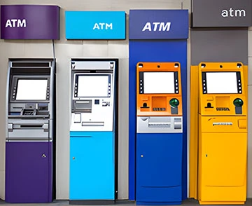
100% uptime банкоматів через 3G/4G роутер UR32 без дротового каналу
Моніторинг енергоспоживання в порту: 20 × UC100 і LoRaWAN
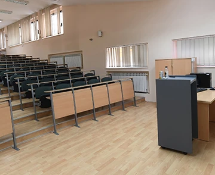
Датчики присутності та CO₂ у BMS університету в Абу-Дабі
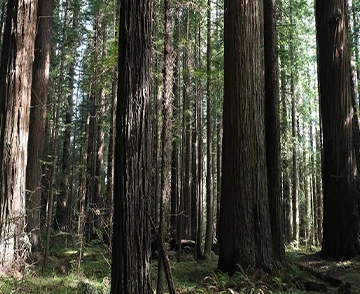
Дистанційний моніторинг вологості лісової підстилки: 99% кореляції з ручними замірами
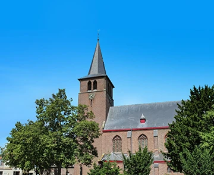
Мікроклімат церкви з колонією кажанів: 11 датчиків EM300-TH у Нідерландах
Бездротовий моніторинг температури в лікарні на 319 ліжок: 90 датчиків LoRaWAN
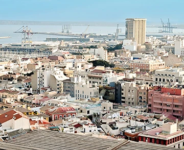
48 AM103L і 4 EM500-CO2 для оцінки утеплення житлових будинків у Валенсії
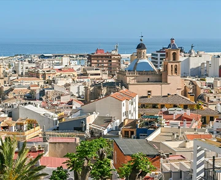
130 датчиків AM103L у домогосподарствах Валенсії для боротьби з енергобідністю
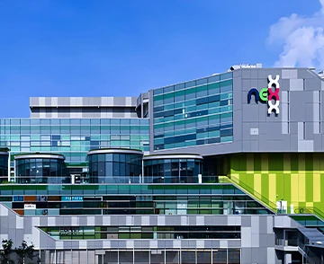
Моніторинг IAQ у ТРЦ NEX: 35 датчиків AM319 керують вентиляцією HVAC
−16% і −12% енергії на HVAC у 5 віллах Дубая завдяки AM319
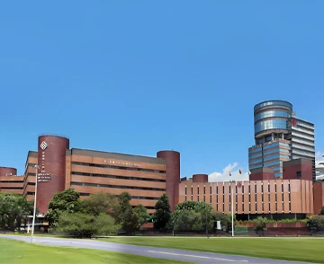
Цифровий двійник аудиторії з IAQ-датчиками AM307 для контролю якості повітря
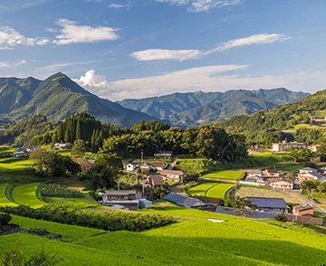
LoRaWAN-моніторинг мікроклімату на бройлерних птахофермах у Міядзакі
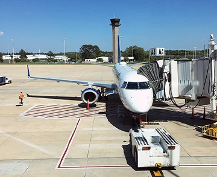
Розумний аеропорт JAX: облік пасажиропотоку, якість повітря й запах у вбиральнях
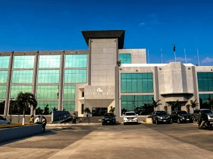
Моніторинг якості повітря в бізнес-центрі в Белізі на 24 датчиках AM319
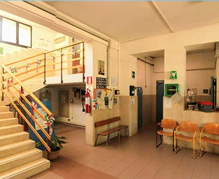
Бездротова система виклику персоналу для закладу догляду в Повільо
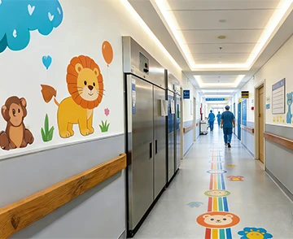
Централізований моніторинг морозильних камер у дитячій лікарні Неаполя
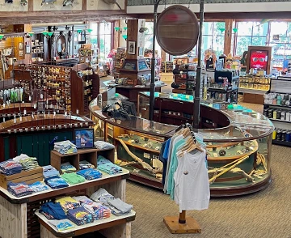
Анонімний облік відвідувачів у дрібному рітейлі Бискайї на VS133
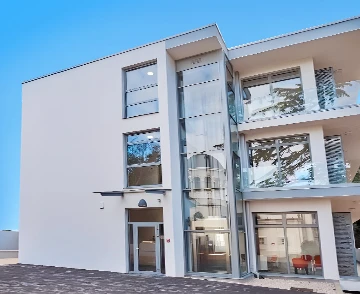
Автоматизація HVAC і контроль протічок у курортному комплексі з 7 будівель
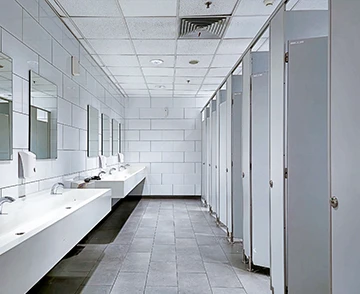
Облік відвідувачів у 72 громадських вбиральнях міста Кейсі за 3 тижні
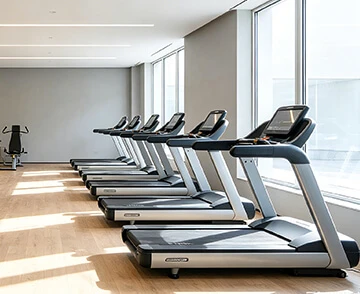
Централізоване керування HVAC і якістю повітря в залах SmartFit без прокладання кабелів
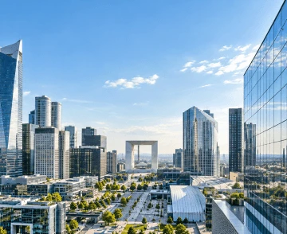
1000+ лічильників людей VS133-P в ~60 офісних будівлях Франції
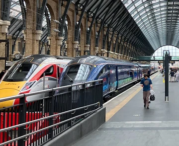
Цифровий двійник на IoT для оптимізації енергії на 18 станціях LNER
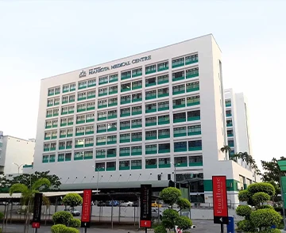
Моніторинг температури й вологості в лікарні MMC Melaka: 53 сенсори LoRaWAN
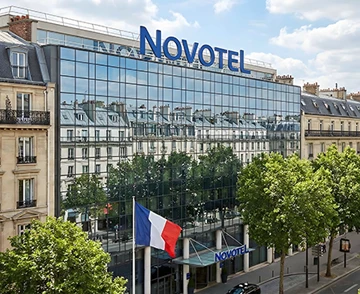
BMS для Novotel на 170 номерів без зупинки роботи готелю
Облік місць у бібліотеці Lingnan University: понад 200 місць на LoRaWAN
Раннє попередження про паводки в Лахорі: дощ і рівень води на одній панелі
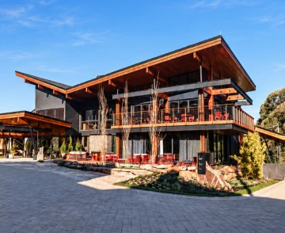
Економія електроенергії 25–30% у преміальному готелі в Грамаду
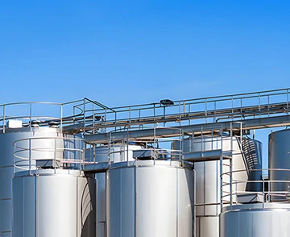
Моніторинг молочних танків на фермах Нової Зеландії через LoRaWAN
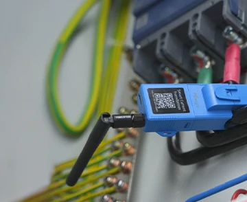
−21% витрат на енергію на заводі: неінвазивний облік по 10 верстатах
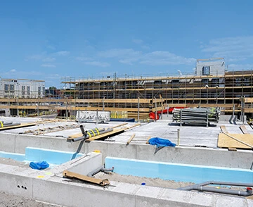
Зв'язок і відеонагляд на будмайданчиках та івентах Північної Європи: ~250 пристроїв
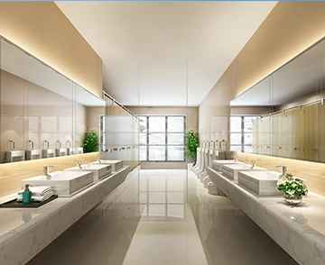
Розумні вбиральні у 15 локаціях Heartland Mall: лічильники й датчики запаху
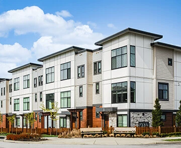
Облік енергоспоживання в житлових будинках Ванкувера на ~150 LoRaWAN-пристроях
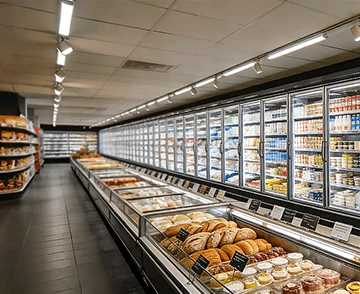
7000+ датчиків контролюють температуру в понад 1000 супермаркетах
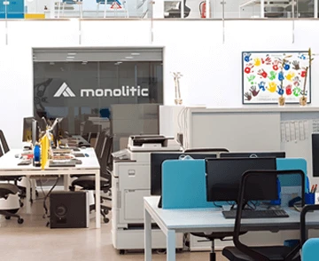
Офіс Monolitic у Барселоні: облік присутності, якість повітря й захист серверної
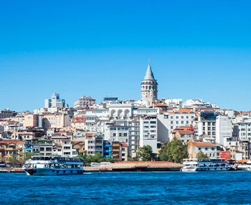
LoRaWAN-моніторинг лісових пожеж і паводків у муніципалітеті Туреччини
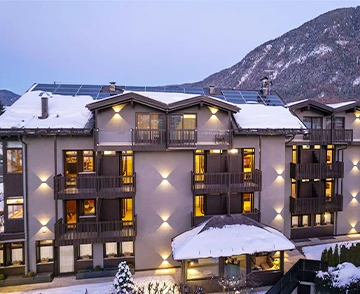
Керування опаленням і безпекою в 27 номерах гірського бутик-готелю
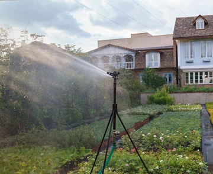
Економія води до 90% у громадських садах Шарлотта на UC511
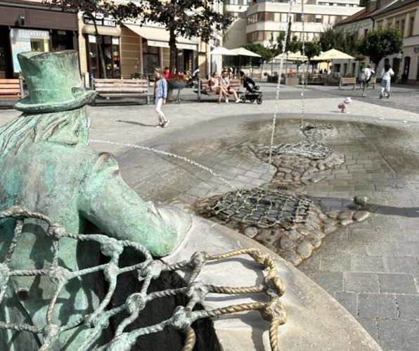
Економія 20 м³ води на добу: автоматизація фонтана у Тренчíні
117 туалетів індійського аеропорту: прибирання за даними датчиків
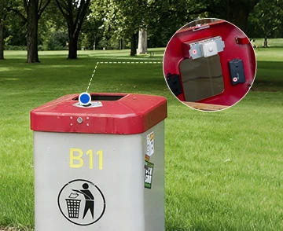
Вивіз сміття в Хюрті за заповненням: −21% кілометражу, −61% скарг
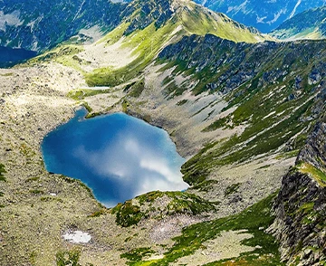
Вивіз сміття за рівнем наповнення в семи національних парках Словаччини
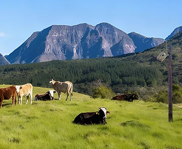
300 сонячних шлюзів SG50 для моніторингу худоби в Іспанії
Моніторинг клімату в музеї: витоки у сховищах виявлено до втрат
Підрахунок людей для керування HVAC і аудиторіями Університету Солфорда
Раннє виявлення протікань і єдиний облік енергії в шести готелях Dakota
Автоматизоване керування шлюзами зрошення на фермі 540 га через LoRaWAN
47 000 датчиків якості повітря в класах шкіл Квебеку на LoRaWAN
Моніторинг сміттєвих баків і протікань у ЖК Artisan Garden на 294 квартири
Віддалений моніторинг локомотивів Railoc в Італії на базі UR32
Прогноз заселення тарганами в каналізації Кордови: 148 000 м² на LoRaWAN
Керування освітленням 190 аудиторій кампусу на 380 вимикачах WS50x
Віддалений контроль тиску в пожежних трубопроводах логістичного парку
Рівень у дамбі щокроку 15 хв замість 4 год: зрошення очищеною водою в Parkes
Автоматичний віддалений полив виноградників у Нінся на LoRaWAN
Енергоефективність і контроль відвідувачів в історичному театрі Рима без прокладання кабелів
250 × UR32 і 250 × UR35 для телеметрії та керування насосами свердловин
Розумні AIoT-класи в Chengdu Neusoft University: повітря, серверна, переговорні
Енергоефективна офісна будівля в Куала-Лумпурі на базі LoRaWAN та EMS
Розумне керування освітленням, енергією та IAQ у двох офісних будівлях Шеньчженя
Прибирання за потребою в офісах Цюриха на основі даних WS202
Автоматичний полив і моніторинг середовища на плантації інжиру
Раннє виявлення лісових пожеж: 75 датчиків EM500-CO2 у Флоріні
58 камер X5: +30% ефективності ресурсів і прогноз врожаю ~90% у теплицях
−25% палива на опаленні: LoRaWAN-автоматизація мережі медцентрів в Іспанії
Автоматизація освітлення та мікроклімату в офісі порту Джохор-Бару
Розумний полив 10 парків і спортмайданчиків Девонпорта на LoRaWAN
637 LoRaWAN-датчиків для води, повітря й енергії на острові Раротонга
Економія води 40% на картопляних плантаціях завдяки LoRaWAN-поливу
Автоматизація пилкоподібних теплиць на Маврикії на LoRaWAN
Моніторинг міжміських автобусів у реальному часі на Beaver IoT
Облік наповненості контейнерів для вторсировини по всій Мальті на EM310-UDL
Моніторинг температури, вологості та кисню на чайному виробництві в Уїшані
LoRaWAN-моніторинг температури обладнання на вугільній ТЕС Guodian Suqian
Контроль температури й вологості в музеї Zhuranmu на LoRaWAN
Віддалений моніторинг температури в салонах 80 міських автобусів у Шеллефтео
Моніторинг температури в 100+ холодильниках для ліків у центрах догляду
Цілодобовий моніторинг зразків і резервуарів у найбільшій лікарні Туреччини
Моніторинг температури зберігання вакцин у лікарнях та аптеках Індонезії
Бездротовий контроль розширення парового котла ТЕС: 108 датчиків на 36 точках
Точний підрахунок відвідувачів у 700+ магазинах Європи на VS133
Час реакції на протікання менше 3 с у 38-поверховому будинку в Монреалі
Дистанційний полив на високостандартних полях у Нінся на LoRaWAN
LoRaWAN-шлюзи приймають дані метеозондів із висоти 8–10 км
За цими фільтрами нічого не знайдено. Спробуйте прибрати частину позначок.
Кейси Milesight — стислий виклад нашими словами за матеріалами milesight.com, фото — Milesight.
Хочете такий результат на своєму об'єкті?
Розкажіть про задачу — підберемо обладнання й партнера-інтегратора.